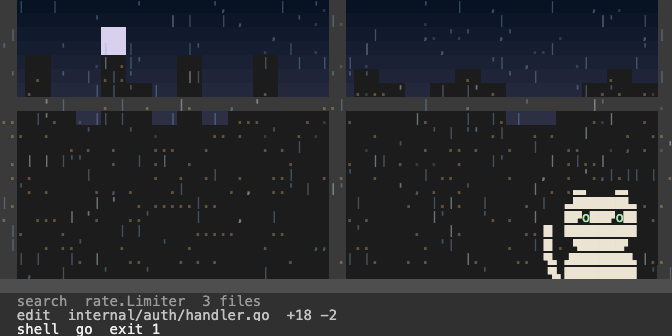
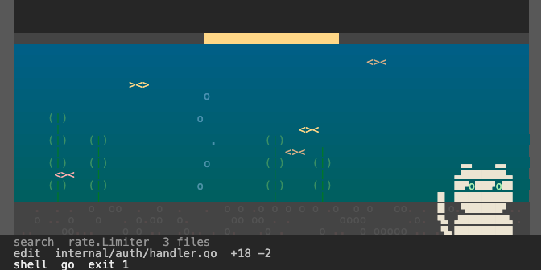
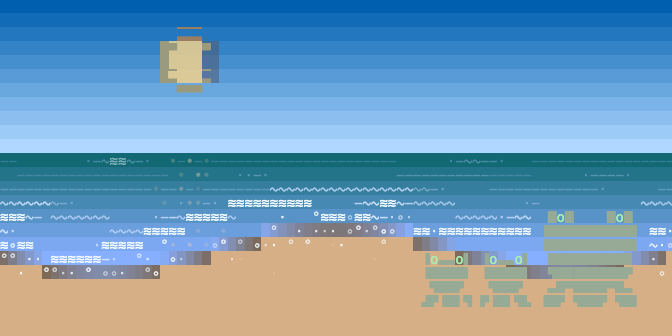
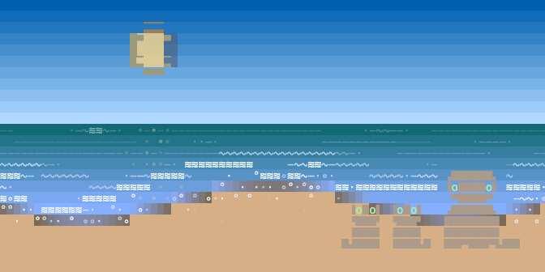

Cozy ASCII scenes that react to your agent while it works.
Your agent goes off to think for a few minutes at a time. Sit back and watch it work. The tide rises as it gets busy and settles when it stops. Kittens paddle out when it sends subagents, and swim off when they report back. The moon thins and sinks as the context window fills. The last few files it touched are written in the sand, and the water takes them as they get old.
It runs in the same window as the agent, just under its output, so nothing leaves your screen and there is nothing to open or read. Glance at it the way you would glance out a window, and you know how the work is going.
Each landscape is a scape. The first one is a shoreline, with a cat who dozes through the quiet and comes over to knock when the agent needs you. Everything on this page is that scape, running.
- A glance is enough. How hard it is working, what it is doing right now, whether something broke, whether it is waiting on you. Nothing to read.
- Two knocks you can tell apart from across the room. A solid balloon and a chime when it needs you, a dotted one and a low note when it is done. Silent while it works.
- Two commands and it is on. It backs up your agent's hooks before writing its own, and puts them back byte for byte if you take it off. No browser tab, no config file, no account.
- One fact, one place. Activity, subagents, finished todos, context left: each owns its own part of the scene. On the shore those are the swells, the kittens, the stars and the moon.

Fourteen seconds into a turn, at noon. Edits landing, five subagents out, the sand carrying the last tool calls. Every clip on this page is the real engine folding the same events the Claude Code adapter emits. Nothing is posed.
xscapes install claude --apply # Claude Code: writes its hooks after a backup, uninstall restores them byte for byte
xscapes claude # the agent in the top of the window, the scape underneath
xscapes inside <any command> # anything else: host it the same way
It runs on your clock
The scape keeps the time of day where you are. There is no theme setting and no dark mode switch: the sky goes dark because it is dark outside, the sun crosses it, and the light on the water follows. You look up from your work and the landscape has moved on with the afternoon, the way one outside the window would.
Below is one session at four hours.

Afternoon. A command exited 1. The companion carries it, ears back and tail flat, until you come back. The weather never does.

Dusk. The agent needs permission. A solid balloon, the alert pose, and a chime.

Night. Done, every todo lit. A dotted balloon and a low note. The moon has waned and sunk with the context, and the number under it says what is left.

Dawn, half a minute later. Flat sea, the writing receding, the companion dozing.
What a glance tells you
Every question you would normally interrupt yourself to answer has one place in the scene, and no two share a place. Nothing here is a number you have to read. This is the shoreline's vocabulary, most useful first.
| It needs you | A solid balloon over the companion, in a warm colour, with a bright chime. It says what is being asked. |
| It finished | A dotted balloon in a cool colour and a low note. The cat sits up, content, and holds the pose so you see it when you get back. |
| Something broke | The companion goes worried: ears back, tail flat, amber eyes. It stays that way until the trouble clears, so a failure you missed is still on screen ten minutes later. |
| How hard it is working | The sea. How many swells are travelling and how tall, with whitecaps once it is going flat out. Flat water means it is waiting on you. |
| What it is doing right now | Writing in the sand: the tool and the file, newest and brightest at the waterline, older lines fading as the tide takes them. |
| How much context is left | The sun by day and the moon by night. It wanes and sinks toward the horizon as the window fills, and from 40% used it carries the number underneath. |
| How many subagents are out | Kittens, one each. Some sit on the sand, some paddle in the shallows, and each swims off along the horizon when its agent reports back. |
| How much of the plan is done | Stars in the upper sky, one lit per finished item on the agent's list. They come out as the evening does. |
| What time it is | The sky, on your actual clock. |
There is one rule underneath all of it: the water is the work, and the sky is the world. Anything moving on the sea is your agent. Anything in the light and the sky is just the day going by. You never have to work out which of two meanings a change is carrying.
The next scapes
A landscape works with all of this as long as it can offer six things: a light, a sky, something that moves with the work, a surface, somewhere the work piles up, and a companion to live in it. The shoreline is the one that runs today. These are next, drawn at the same size in the same renderer.

The rainy window. Rain on the glass carries the work, and it comes down harder the busier the agent gets. The city behind it carries the hour. The cat moves to the inside sill.

The aquarium. The fish are the work: more of them come out as it picks up. The tank's lamp is the light, the gravel is where the work piles up, and the cat watches from the front.

The frog, drawn for the rainy window, where it sits on the sill and its young swim. Its eyes are domes on top of its head rather than gaps in a face, which is why it survives being three characters tall.

The otter, for the shore, where its pups can swim with the tide instead of sitting it out on the sand. Shown here beside the cat's own sea so you can compare them at the same size.
Underneath, a protocol
xscapes is two things. Below is an event protocol with pluggable adapters, which works for any agent that runs in a terminal. On top are the scapes, which are what that protocol looks like once you give it a landscape and something living in it.
Fifteen events, sent over a Unix socket with a JSON-lines file as the fallback. Tool events do not each get their own weather: every one feeds a single activity level, and the sand names the tool and the file. The sea says how much, the sand says what. Claude Code is wired through its hooks, and one line in a shell script, xscapes emit needs_input -text "allow Bash?", is a complete adapter for anything else. If an agent can run a command, it can drive a scape.
Underneath: one Go binary, standard library only, nothing to install beside it. The renderer is a three-layer canvas with real alpha, composited and then matched to the xterm-256 palette, so the picture is the same in Terminal.app, iTerm2 and Ghostty instead of changing with your colour settings. It runs on the alternate screen and hosts your agent inside it, so the agent's own output is untouched and scrolls the way it always did. The clips on this page are the same renderer with the colour left alone.
Getting the same picture everywhere took knowing where the terminals differ. Terminal.app draws a half-block glyph five pixels below the top of the cell and Ghostty does not, so the scene is drawn from the bottom half there instead, and the seams disappear. They move your content in opposite directions when the window changes, so each one gets its own set of moves. Drag the window and the shoreline reflows live: the sky, the sea and the beach take their share of whatever height you gave it, the companion keeps its distance from the edge, and the agent's transcript above is never touched. It is composed for 80 by 24 and still readable at 40 by 12.
It stays for the session
You start it once and it runs until you are done. Tasks move the scene and the day passes over it. Every repository gets its own shoreline, the same one every time, shaped from the repo itself, and your companion comes with you to all of them. It has been running here daily since the start of September.
Built for the Commons "Make Waiting for AI Fun" hackathon, September 2026. Go, standard library only. MIT. Source and issues at github.com/donlucasx/xscapes.